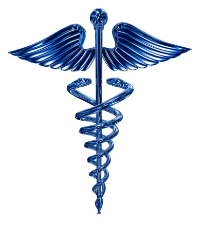
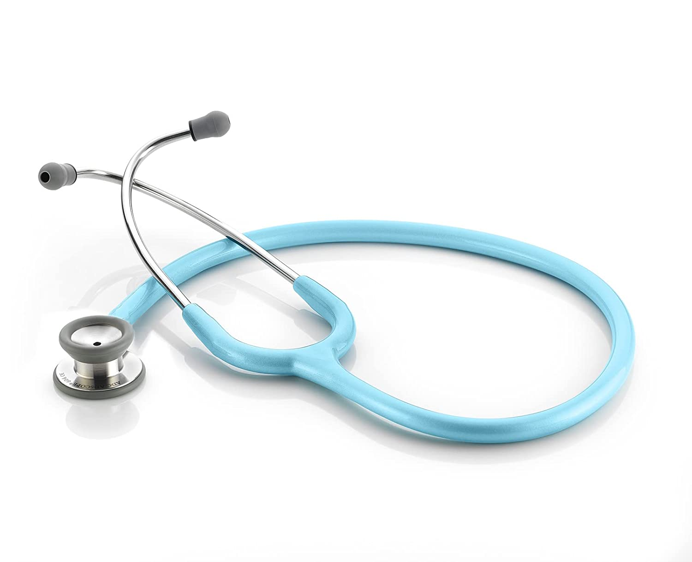
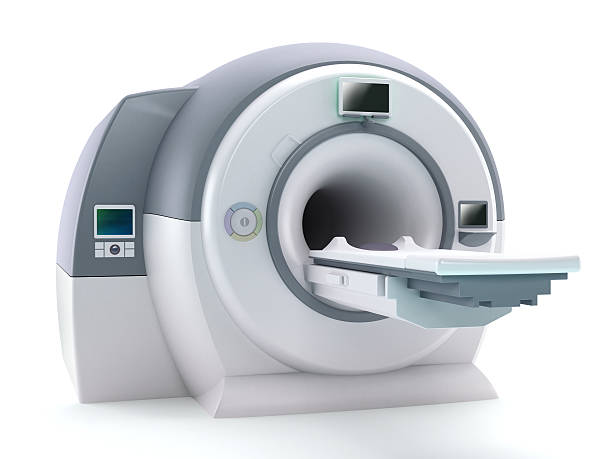

<div class="container">
  <div class="row">
    <div class="col-sm">
      <div id="carouselExampleControlsNoTouching" class="carousel slide" data-bs-touch="false" data-bs-interval="false">
        <div class="carousel-inner">
          <div class="carousel-item active">
            
          </div>
          <div class="carousel-item">
            
          </div>
          <div class="carousel-item">
            
          </div>
        </div>
        <button class="carousel-control-prev" type="button" data-bs-target="#carouselExampleControlsNoTouching" data-bs-slide="prev">
          <span class="carousel-control-prev-icon" aria-hidden="true"></span>
          <span class="visually-hidden">Previous</span>
        </button>
        <button class="carousel-control-next" type="button" data-bs-target="#carouselExampleControlsNoTouching" data-bs-slide="next">
          <span class="carousel-control-next-icon" aria-hidden="true"></span>
          <span class="visually-hidden">Next</span>
        </button>
      </div>
    </div>
    <div class="col-sm" style="text-align: center; font-family:Georgia, 'Times New Roman', Times, serif; font-style:italic; color:royalblue;">
<h1>MediFY</h1>
<div class="col-sm" style="font-family: 'Times New Roman', Times, serif; font-style: italic; color: black; text-align: justify; font-size:large;">
<p>Medical equipment is used for the specific purposes of diagnosis and treatment of disease or rehabilitation following disease or injury; it can be used either alone or in combination with any accessory, consumable or other piece of medical equipment.The use of medical equipment in hospitals and clinics is of greatest importance. The use of equipment allows the medical professions, like doctors, to assess a patient's medical needs. As a result, it is important to know what different types of medical equipment are available, the different functions of each, and how they all work coherently together to be able to be able to assist and treat the patient accordingly.

  Every day the variety of different types of medical equipment and supplies are expanding. There are many different categories of medical equipment and supplies, but the main categories are: electronic, diagnostic, surgical, durable medical equipment (DME), acute care, and storage and transport.</p>
</div>
    </div>
  </div>
</div>
